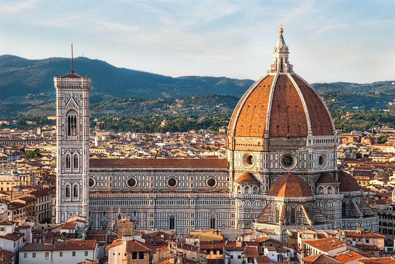
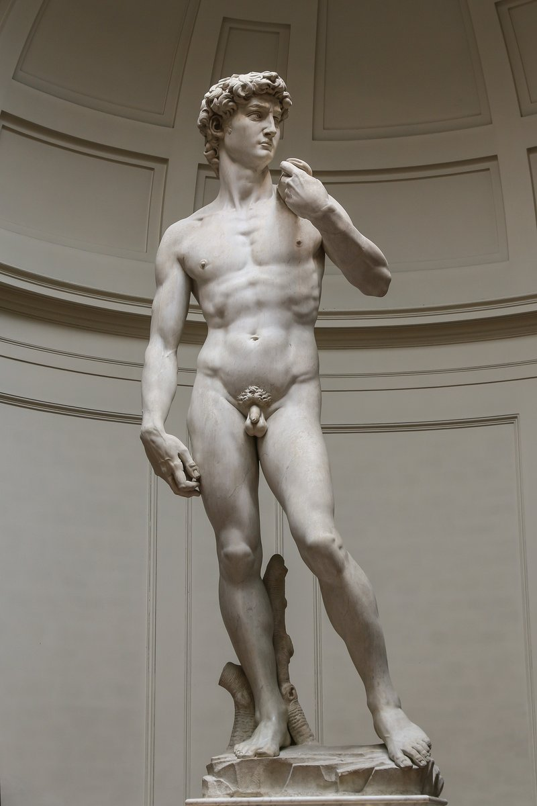

✈️ Vuelos Seleccionados (ITA Airways)
Ruta multidestino óptima: salimos viernes de noche sin pedir días hábiles extras de trabajo y volvemos desde Atenas con escala protegida de 1h 50m en Roma.
Costo por pareja: USD 3.177,00.
🗺️ Todas las Opciones Expandidas con Fotos de Atracciones
21 noches netas en Europa. Hacé clic en cualquiera de las 3 opciones para ver su recorrido detallado con fotos y paradas sin necesidad de hacer scroll largo:
Caminatas por el foro imperial, fuentes barrocas, basílicas y trattorias en Trastevere.


Cuna del Renacimiento, vinos de Chianti y bistec a la fiorentina.


Canales históricos, palacios sobre el agua y paseo en vaporetto al atardecer.


La Acrópolis, barrios pintorescos de Plaka y Anafiotika con tabernas tradicionales.


Pascua Ortodoxa griega (domingo 2 de mayo), pueblos blancos, playas doradas y comida casera.


Los acantilados de la caldera más famosos del mundo, cúpulas azules y navegación volcánica.


🎟️ Tabla de Entradas Oficiales, Pasajes y Excursiones
Precios actualizados de referencia para presupuestar con exactitud cada atracción y transporte interno:
🏛️ 1. Entradas a Monumentos Clave
| Atracción | Destino | Ticket Oficial | Civitatis (Tour Guiado / Sin Cola) | Recomendación |
|---|---|---|---|---|
| Coliseo, Foro Romano y Palatino | Roma 🇮🇹 | €18,00 (básico) / €24 (arena) | €45,00 – €55,00 | Comprar oficial 30 días antes con horario fijo. |
| Museos Vaticanos y Capilla Sixtina | Roma 🇮🇹 | €20,00 + €5 reserva online | €55,00 – €65,00 | Civitatis si se agotan oficiales en la web papal. |
| Panteón de Agripa | Roma 🇮🇹 | €5,00 | €15,00 (con audioguía) | Oficial en la web del ministerio italiano. |
| Galería Uffizi | Florencia 🇮🇹 | €25,00 (+€4 reserva) | €50,00 – €60,00 | Oficial reservar turno matutino. |
| Cúpula del Duomo de Brunelleschi | Florencia 🇮🇹 | €30,00 (Brunelleschi Pass) | €45,00 – €55,00 | Oficial subida de 463 escalones imperdible. |
| Parque Arqueológico de Pompeya | Nápoles 🇮🇹 | €18,00 (+€2 reserva) | €50,00 – €65,00 (con arqueólogo) | Civitatis suma mucho por la inmensidad del sitio. |
| Acrópolis de Atenas | Atenas 🇬🇷 | €20,00 (o Pase 7 sitios €30) | €48,00 – €58,00 (con guía en español) | Civitatis muy recomendada para entender las ruinas. |
| Museo de la Acrópolis | Atenas 🇬🇷 | €15,00 | Combinado con Acrópolis: ~€62 | Oficial o pase combinado. |
🚆 2. Pasajes de Trenes, Vuelos Internos y Ferrys
| Tramo | Operador | Estimado x Persona | Estimado x Pareja | Detalles |
|---|---|---|---|---|
| Roma ➔ Florencia (Alta Velocidad) | Frecciarossa / Italo | €25 – €40 | €50 – €80 | 1h 35m. Centro a centro. Comprar 3 meses antes. |
| Florencia ➔ Venecia (Alta Velocidad) | Frecciarossa / Italo | €30 – €45 | €60 – €90 | 2h 15m. Llega directo a estación Santa Lucia sobre el agua. |
| Roma ➔ Nápoles (Opción B) | Frecciarossa | €20 – €35 | €40 – €70 | 1h 10m. Frecuencias cada 20 minutos. |
| Italia ➔ Atenas (Vuelo interno) | Aegean / Volotea / Ryanair | €80 – €130 | €160 – €260 | 2h netas de vuelo. Incluye valija despachada 20kg. |
| Atenas (Pireo) ➔ Paros / Naxos | Blue Star Ferries / SeaJets | €45 – €75 | €90 – €150 | Blue Star 4h (€45-55) / Seajets rápido 3h (€75). |
| Naxos / Paros ➔ Santorini | SeaJets / Blue Star | €35 – €55 | €70 – €110 | 1h 45m de travesía entre islas. Butacas numeradas. |
| Santorini ➔ Atenas | Vuelo Sky Express o Ferry | €60 – €95 | €120 – €190 | Vuelo de 45 min o Ferry rápido de 4h 30m. |
🇬🇷 3. Excursiones de Referencia en Grecia (Civitatis)
En Grecia delegar la logística marítima o arqueológica en Civitatis ofrece guías en español y traslados garantizados:
| Excursión / Actividad | Ubicación | Precio Civitatis x Persona | Qué Incluye & Por Qué Vale la Pena |
|---|---|---|---|
| Crucero en Catamarán al Atardecer por la Caldera | Santorini 🇬🇷 | €115 – €135 | ⭐ La actividad cumbre del viaje: Navegación por el volcán, parada en fuentes termales, Red Beach, cena barbacoa a bordo con vino blanco griego y atardecer de Oia desde el mar. |
| Visita Guiada Acrópolis + Museo de la Acrópolis | Atenas 🇬🇷 | €58 – €65 | Guía oficial de habla hispana, entrada preferente sin colas para evitar las 2 horas de fila bajo el sol y explicación profunda del Partenón. |
| Crucero en Velero de Día Completo por Koufonisia / Calas | Naxos / Paros 🇬🇷 | €85 – €105 | Paseo en barco tradicional de madera a islas vírgenes con aguas cristalinas turquesas, almuerzo casero y equipo de snorkel. |
| Tour Gastronómico Nocturno por Plaka y Psiri | Atenas 🇬🇷 | €55 – €70 | Recorrido a pie con degustación de souvlaki, quesos feta, aceite de oliva, licores (ouzo/raki) y cena en taberna típica. |
| Excursión de 1 Día a Delfos con Guía en Español | Atenas (Día libre) 🇬🇷 | €85 – €95 | Opcional si sobra tiempo en Atenas: Bus ida y vuelta, entrada al oráculo místico de Delfos y almuerzo tradicional griego en montaña. |
🏨 Alojamiento: Habitaciones Separadas para Cada Pareja
Para un viaje de 3 semanas (21 noches), se descarta completamente la habitación cuádruple compartida. La prioridad es el descanso, la intimidad y la comodidad de cada pareja.
Hoteles 3★ Superior y 4★ céntricos (aprox. €140 – €190 por noche por habitación doble).
- Baño privado independiente para cada pareja.
- Desayuno buffet incluido cada mañana (ahorra tiempo y dinero en cafeterías).
- Total libertad de horarios: Si una pareja quiere madrugar y la otra descansar, no se molestan.
- Recepción 24h para custodia de equipaje al llegar o salir de las estaciones de tren.
- Ubicación a pasos de los centros históricos y estaciones de metro/tren.
Alquiler de departamento completo de calidad (aprox. €220 – €280 por noche total dividido entre las 2 parejas).
- 2 dormitorios separados con cerradura/privacidad y 2 baños completos.
- Sala de estar común para compartir copas de vino al final del día.
- Cocina equipada y heladera (ideal para desayunos relajados y comprar frutas en ferias).
- Lavarropas incluido (fundamental a mitad de viaje para viajar liviano).
- Excelente opción especialmente para las islas griegas (villas cicládicas con terraza).
En Italia (ciudades) conviene contratar 2 habitaciones dobles en hoteles céntricos con desayuno para estar al lado de las estaciones de tren y museos. En las Islas Griegas (Paros / Santorini) conviene alquilar una casa/villa típica cicládica de 2 dormitorios independientes con terraza vista al mar para disfrutar atardeceres juntos con privacidad en cada habitación.
📸 Galería de Destinos a Visitar
Postales y referencias de cada ciudad e isla para visualizar el viaje entre las 2 parejas:
 🇮🇹 ITALIA
🇮🇹 ITALIA
El Coliseo, Foros Imperiales, Fontana di Trevi, Museos Vaticanos y cenas con pastas caseras en el callejón de Trastevere.
La impresionante cúpula del Duomo, el Ponte Vecchio sobre el río Arno, el David de Miguel Ángel y escapadas en tren rápido.
 🇮🇹 ITALIA
🇮🇹 ITALIA
Navegación por el Gran Canal en vaporetto, la majestuosa Plaza San Marcos, el Palacio Ducal y perderse en sus puentes sin ruidos de autos.
 🇮🇹 ITALIA
🇮🇹 ITALIA
Caminar por las calles intactas de Pompeya sepultadas por el Vesubio, sumado a la energía auténtica napolitana y vistas al golfo.
 🇬🇷 GRECIA
🇬🇷 GRECIA
El Partenón coronando la Acrópolis, el barrio tradicional de Plaka a sus pies con tabernas al aire libre, souvlaki y música griega.
 🇬🇷 GRECIA
🇬🇷 GRECIA
Calles empedradas de casas blancas y buganvilias, puertos pesqueros con pulpo secándose al sol, playas tranquilas y la Pascua Ortodoxa.
 🇬🇷 GRECIA
🇬🇷 GRECIA
Los acantilados de Oia e Imerovigli, atardeceres legendarios sobre el mar Egeo, bodegas de vino volcánico y caminatas panorámicas.
🚶♂️ Cero Manejo: Cómo Nos Movemos sin Alquilar Auto
El itinerario está pensado 100% para evitar el estrés del tráfico, las multas por zonas ZTL de Italia, el estacionamiento imposible y el gasto de combustible:
| Tramo | Medio de Transporte | Detalles & Confort |
|---|---|---|
| Roma ↔ Florencia ↔ Venecia | Tren Frecciarossa / Italo | Alta velocidad (1h 35m a 2h 15m). De centro a centro, con wifi, café y espacio para valijas. |
| Nápoles / Pompeya | Frecciarossa + Tren local | Frecciarossa a Nápoles (1h 10m). Tren local a Pompeya (30 min que te deja en la puerta de la boletería). |
| Italia → Grecia | Vuelo directo (Aegean / low-cost) | 2 horas netas de vuelo. Con valijas despachadas incluidas para las 2 parejas. |
| Atenas ↔ Islas | Ferrys rápidos (Blue Star / SeaJets) | Catamaranes con butacas numeradas reclinables. Salida desde el puerto de El Pireo (conectado por metro). |
| En las islas (Naxos / Santorini) | Red de colectivos KTEL y caminatas | Puntuales, con aire acondicionado, salen desde el puerto central hacia cada playa y pueblo (€2 a €3 el tramo). |
💰 Presupuesto Estimado Consolidado (Por Pareja)
Base confort estándar contemplando 2 Habitaciones Dobles Separadas en hoteles 3★ superior / 4★ céntricos con desayuno, gastronomía de calidad, transporte y excursiones:
| Rubro | Estimado x Pareja (USD) | Comentarios & Cobertura |
|---|---|---|
| Vuelos Internacionales ITA Airways | USD 3.177 | Ya cotizados confirmados (Tarifa Economy Comfort, valija en bodega 23 kg c/u). |
| Alojamiento: 2 Habitaciones Dobles (21 noches) | USD 1.600 – USD 2.150 | Habitación doble privada por pareja con baño privado y desayuno (Base €140-€190/noche). |
| Transportes internos (Trenes + Vuelo + Ferrys) | USD 450 – USD 650 | Frecciarossa + Vuelo a Atenas + Ferrys entre islas con butacas reservadas. |
| Entradas, Monumentos & Excursiones Civitatis | USD 450 – USD 650 | Coliseo, Vaticano, Acrópolis, Catamarán en Santorini y entradas de museos. |
| Comidas y gastronomía (Almuerzos y cenas) | USD 1.100 – USD 1.400 | Almuerzos ligeros, helados/cafés y cenas con vino en trattorias y tabernas. |
| Seguro médico & extras | USD 200 – USD 300 | Asistencia al viajero y tasas turísticas de ciudad (tasa de soggiorno). |
| TOTAL ESTIMADO POR PAREJA | USD 6.977 – USD 8.327 | Gasto global aproximado todo incluido para 21 días (con habitación doble privada). |
Presupuesto total combinado: USD 13.950 – USD 16.650 (promedio de aprox. USD 7.600 por pareja con 2 habitaciones dobles independientes, vuelos, hoteles de buena categoría, catamarán y todas las atracciones cubiertas).